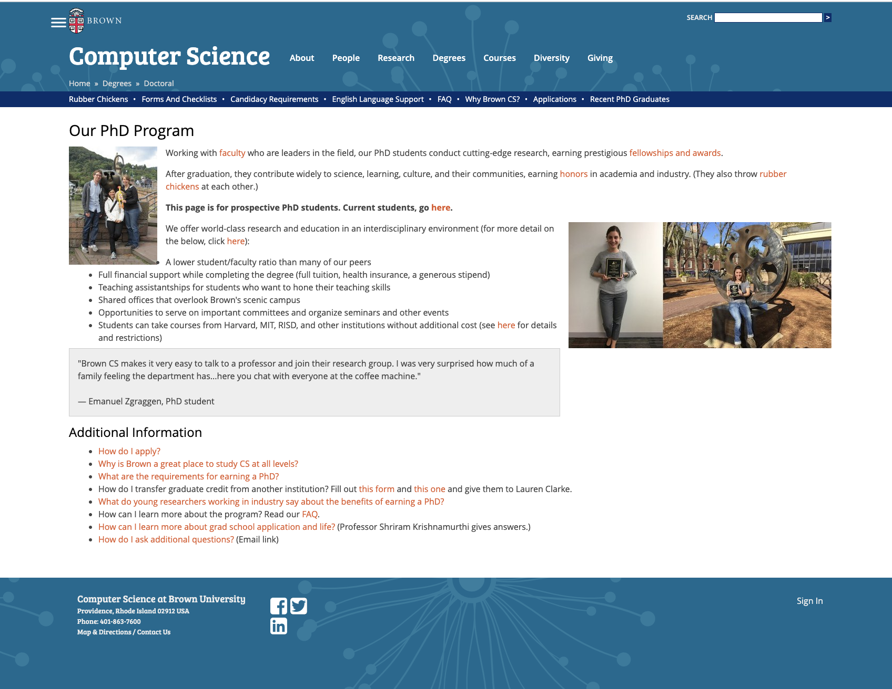

We pride in our advocacy for inclusion, diversity, and accessibility, but do we actually demonstrate that? The website says otherwise.
Despite being the face of Brown's CS program, the Brown CS PhD website has an unintiutive, inaccessible design that makes it hard for prospective applicants and current PhD students find information relevant to the program. The main focus of the project is to change the visual hierarchy and add more alt text for visual accessibility. So the following is a more enhanced narrative of the first iteration of this project with my personal reflections on the project and summary of feedback.
The first iteration suffered from lack of clear narrative, not enough visual contrast, and images that were too large. Link to First Iteration of the Project. 